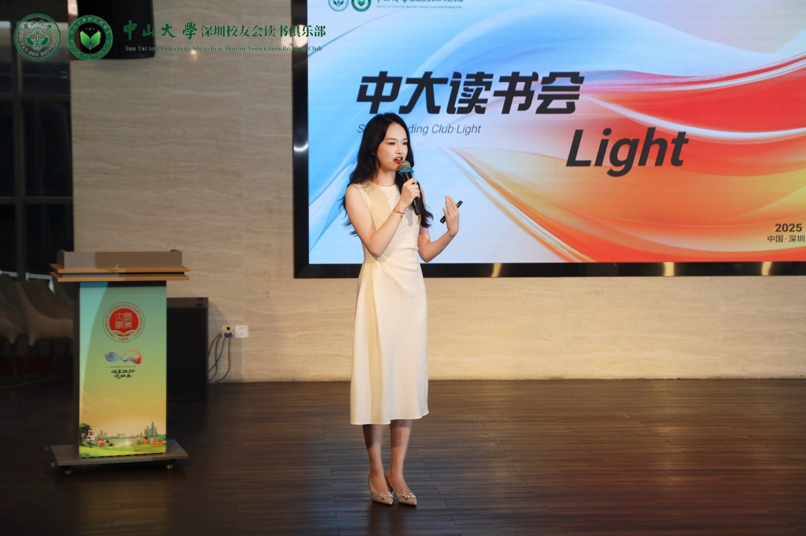
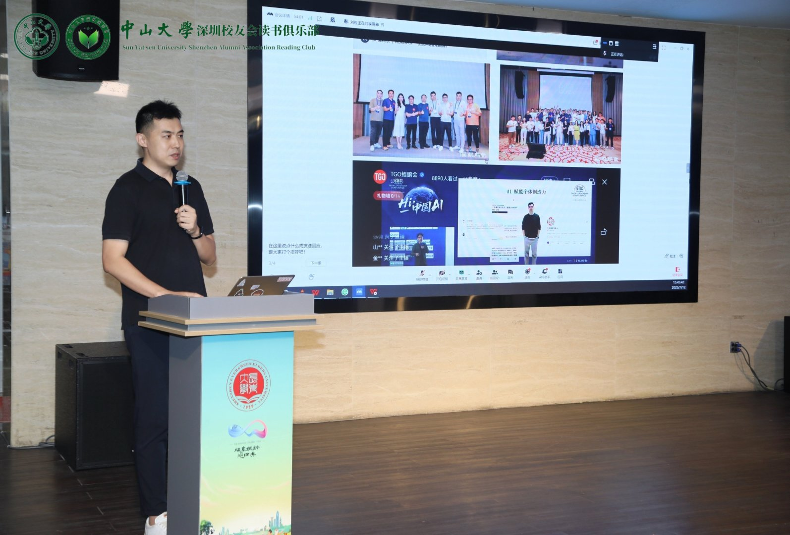
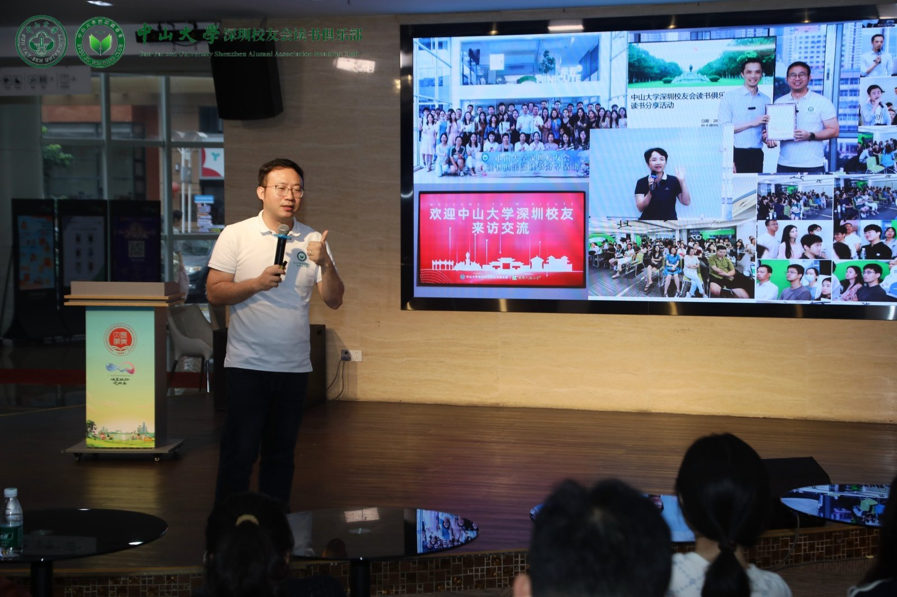

距离第一期“light表达计划”落幕已有数日，但那个周六下午的暖意似乎还萦绕在心头。

为什么叫 Light？因为它是轻的：轻盈、开放、不设门槛；它也是亮的：照见彼此、点亮自我。
在这个充满不确定性的时代，我们深信，最能给人力量的不是遥远的趋势，而是身边人一个个真实发生的故事。
那个下午，三位分享者带来的，正是关于“普通人如何创造非凡变量”的回答。
你的作品，是你的第二份简历
这是刘哲师兄在分享时，掷地有声的一句话，也成为了贯穿全场最闪亮的主题。我们习惯了用头衔和履历去定义自己，但当行业巨变，当旧有的标签不再闪光，我们用什么来向世界重新介绍自己？刘哲师兄给出的答案是：作品。

他曾是地产行业百亿项目的操盘手，却在最难转型的年纪，一头扎进了AI的浪潮。他没有等待一个完美的转型机会，而是把学习和探索的过程，变成了一件件“作品”：他用ChatGPT考CFA的经历，成了一篇刷屏科技媒体的文章；他对AI工具的思考，成了在中大、在各大高校圈、科技圈的一次次分享；他帮助普通人将创意落地的想法，催生了一场让科技大佬都为之站台的创意大会。
他不再递出那张印着“前总经理”的名片，而是直接“甩链接”，他说：“看，这就是我的想法，我的作品。”
你看，当一个人开始创造，他的能量便不再被困于过去的围城。他的作品，就是他披荆斩棘的路，是他最硬核、最无法被复制的第二份简历。这份简历，无关乎年龄，无关乎背景，只关乎行动。而这条路，人人皆可复制。
从一个“该多有意思”的念头开始
如果说刘哲师兄提供的是一套“可复制”的行动方法论，那么阿听的故事，则完美诠释了这一切的起点可以有多么轻盈和纯粹。
她不是程序员，却用AI为南头古城这座“没有历史感”的城市，打造了一个沉浸式的解谜游戏。她让冰冷的文物开口说话，让遥远的历史与脚下的土地产生连接。这一切的开端，不是一个宏大的商业计划，而是一个源于热爱的简单念头：“如果能这样玩，该多有意思啊！”

她把对历史的热爱，对传统景区“单向灌输”模式的反思，变成了一个小小的、想要去动手的项目。这个项目，就是她的“作品”。这个作品，让她一个非技术背景的产品经理，漂亮地实现了“破圈”，让她的热情和想象力，成为了最动人的表达。
阿听的故事告诉我们，创造“作品”的门槛，或许并不在于你掌握了多少高深的技术，而在于你是否足够珍视自己脑海中那个“该多有意思”的念头，并愿意为它付诸行动。
把一件事重复做到极致，就是伟大的作品
当我们将目光投向这个舞台的搭建者——志星师兄时，我们对“作品”的理解，又多了一个维度的纵深。他曾是一名警察，却在业余时间，凭着一腔热爱，做了五年、一百多场的读书会。后来，这份热爱被他带到了中大校友会的平台，并以“每周一场，风雨无阻”的钉子精神，坚持了两年多。
他将读书会这件事，做成了值得坚守一生的公益事业。他总结的公式简单而深刻：
重复 + 利他 = 复利

中大读书会，就是他最厚重、最闪亮的作品。它不是一个一次性的项目，而是一个持续生长、不断为他人创造价值的生命体。它证明了，把一件对的事情，用“笨”功夫去坚持，去重复，本身就能创造出巨大的能量和价值。这个舞台，正是他“作品”之上结出的又一颗果实。
无论是阿听充满想象力的数字文创，刘哲那条披荆斩棘的转型之路，还是志星持之以恒的公益事业，他们都在用行动给出一个答案：
别再等待，去创造属于你自己的“作品”。
它不需要完美的蓝图，只需要真诚的表达。

现在，轮到你了。
准备好分享你的故事了吗？